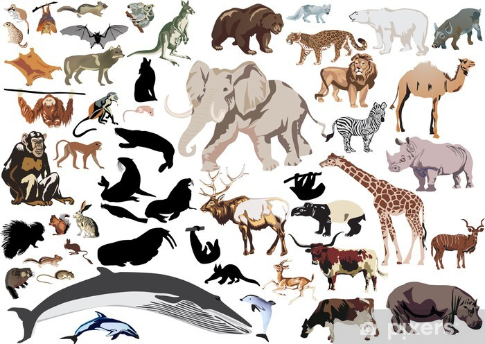

Memeliler
Memeliler, vücutlarını kaplayan kıllar ve yavrularını beslemek için süt üreten meme bezleri ile karakterize edilen bir hayvan sınıfıdır. Yeryüzünde yaklaşık 6.000 farklı memeli türü bulunmaktadır. Bu grup, insanları, balinaları, fillerden farelere kadar geniş bir çeşitlilik gösterir. Memelilerin büyük bir çoğunluğu plasenta ile gelişen yavrulara sahiptir, ancak keseliler (örneğin kangurular) ve monotremeler (örneğin duckbill platypuses) gibi diğer doğurma şekilleri de vardır. Memeliler genellikle karmaşık sosyal yapılar ve ileri düzeyde beyin fonksiyonları ile bilinirler ve çoğu ortamda hayatta kalabilirler.
